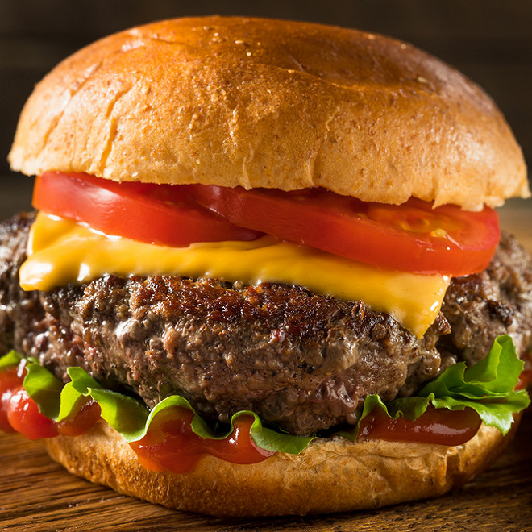

Cheeseburger

Savor the classic American flavor with our delicious cheeseburger recipe. It's a timeless favorite for any burger enthusiast.
Ingredients:
- Ground beef
- Hamburger buns
- Cheese slices (e.g., cheddar, American)
- Lettuce leaves
- Sliced tomatoes
- Sliced onions
- Pickles
- Ketchup
- Mustard
- Salt and pepper to taste
Steps:
- Preheat your grill or stovetop skillet over medium-high heat.
- Divide the ground beef into patties, season with salt and pepper, and cook on the grill or skillet until desired doneness is reached.
- Toast the hamburger buns on the grill or in a toaster until lightly browned.
- Assemble the burgers by placing a patty on the bottom half of each bun.
- Add a slice of cheese on top of each patty, allowing it to melt from the heat.
- Top with lettuce, tomatoes, onions, and pickles.
- Spread ketchup and mustard on the top half of the buns and place them on top of the burger assembly.
- Serve your cheeseburgers hot with your favorite sides. Enjoy!
Return to main page